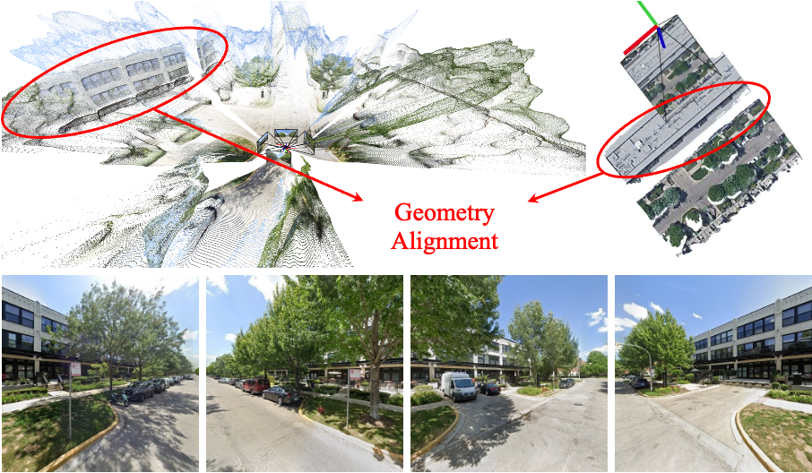
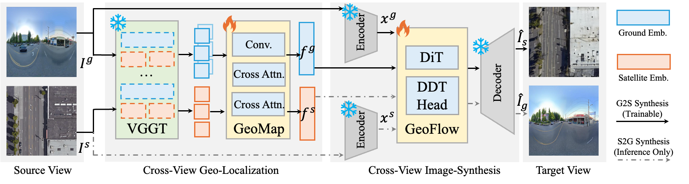
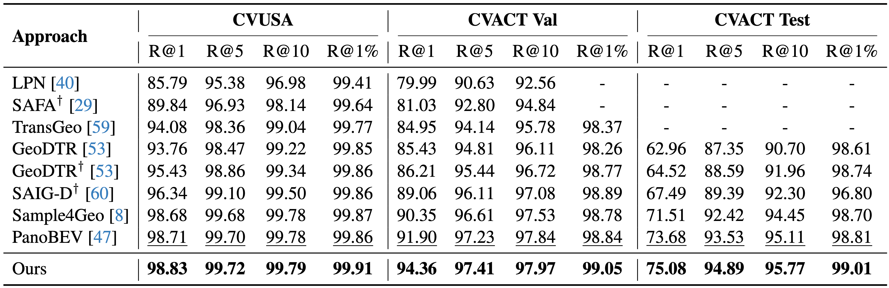
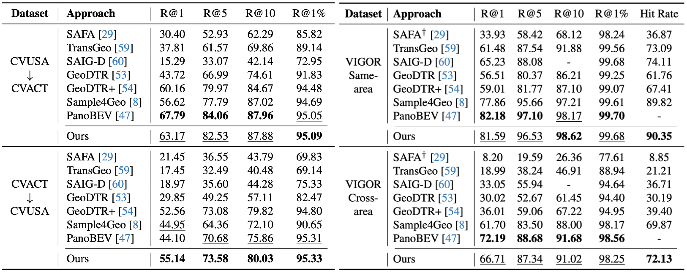
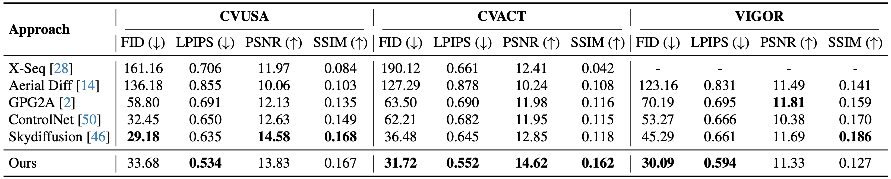
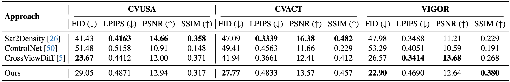

Cross-View Geo-Localization
Visualization of Top 5 Retrieval Results


Cross-view geo-spatial learning consists of two important tasks: Cross-View Geo-Localization (CVGL) and Cross-View Image Synthesis (CVIS), both of which rely on establishing geometric correspondences between ground and aerial views. Recent Geometric Foundation Models (GFMs) have demonstrated strong capabilities in extracting generalizable 3D geometric features from images, but their potential in cross-view geo-spatial tasks remains underexplored. In this work, we present Geo^2, a unified framework that leverages Geometric priors from GFMs (e.g., VGGT) to jointly perform geo-spatial tasks, CVGL and bidirectional CVIS. Despite the 3D reconstruction ability of GFMs, directly applying them to CVGL and CVIS remains challenging due to the large viewpoint gap between ground and aerial imagery. We propose GeoMap, which embeds ground and aerial features into a shared 3D-aware latent space, effectively reducing cross-view discrepancies for localization. This shared latent space naturally bridges cross-view image synthesis in both directions. To exploit this, we propose GeoFlow, a flow-matching model conditioned on geometry-aware latent embeddings. We further introduce a consistency loss to enforce latent alignment between the two synthesis directions, ensuring bidirectional coherence. Extensive experiments on standard benchmarks, including CVUSA, CVACT, and VIGOR, demonstrate that Geo^2 achieves state-of-the-art performance in both localization and synthesis, highlighting the effectiveness of 3D geometric priors for cross-view geo-spatial learning.


Our method achieves the best performance on both CVUSA and CVACT.

Our method achieves the best performance on both CVUSA and CVACT.



Our method achieves the best performance on both CVUSA and CVACT.

Our method achieves the best performance on both CVUSA and CVACT.
@article{zhang2026geo,
title={Geo $\^{}$\backslash$textbf $\{$2$\}$ $: Geometry-Guided Cross-view Geo-Localization and Image Synthesis},
author={Zhang, Yancheng and Zhang, Xiaohan and Sun, Guangyu and Lyu, Zonglin and Wshah, Safwan and Chen, Chen},
journal={arXiv preprint arXiv:2603.25819},
year={2026}
}